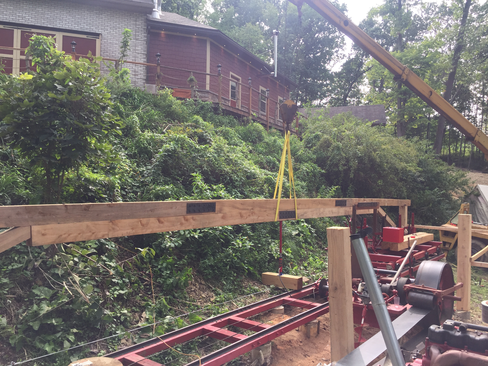

New Storage Buildings (est. Summer 2020)
Spring-Summer 2020
Making some new buildings for storage.
We have a lot of equipment and machinery and a lot of it is currently stored outside, exposed (or at best, semi-exposed) to the elements. Lots of things are stuffed into our currently cramped storage buildings and shops, so we desperately need more facilities to store equipment, machinery, and components. To deal with this, I designed two new buildings on our property. One will actually just be a shelter for the sawmill, while the other will be a sort of warehouse/barn for storage of pallets, crates, drums, and any other material that we don't want to store in our other locations.
The buildings have been designed with timber-framed construction in mind, to allow for cheap construction, and in keeping with the architectural theme of our other facilities. Timber framing is nice, since it allows for very long spans without columns due to the large dimensions of the joists. For instance, because of unstable soil conditions along the south side of the sawmill, we can only have two columns, one at each end, along the south side of the sawmill building. This meant we needed a single wooden beam to span 52ft while supporting potentially heavy snow loads. This was accomplished by using a composite beam made from 5 seperate timbers, bolted together with steel lap plates and many threaded rods throught the stack to preload the beam together. Then cross-braces at each end braced the beam against its columns, while a steel cable tensioned at the bottom of the columns resisted the resulting outward thrust.

The composite beam being installed. The jack in the middle supported the beam while we installed the cross-braces and tensioned the steel cable at the bottom.
The trusses were built in our driveway and then brought down to the jobsite, and installed with our crane. The upper chords attached to the lower chords via large cutouts that transfer the forces very easily without depending on bolts or lag screws to transfer the forces. Diagonal braces were installed to keep the trusses up and aligned. Perlins were then installed and metal roofing added.